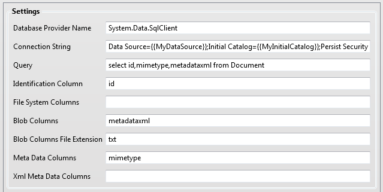
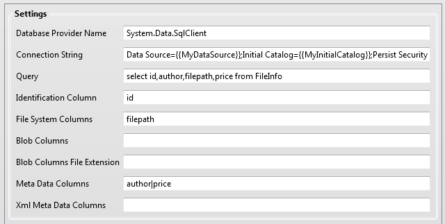

The Database Collector collects records and linked documents from various database systems. It can collect information from MS SQL and other relational databases, such as Oracle or MySQL. The user can define an SQL statement and every record is then changed into a document. This document can consist of one or more files and meta data, which can be indexed with ZyINDEX.
There are two ways to create files:
Example Settings
The example settings below define that the column metadataxml should be converted into a file, column mimetype should be added to the metadata and column id is the identification. Every file will have the extension 'txt'.

The example settings below define that the value of column 'FilePath' is the path of the file that will be collected. Columns author and price are added to the metadata.

Notes
Ado.net data providers are available for a lot of different databases such as MS SQL, Oracle, and MySQL, especially when the ODBC ado.net provider is used. However, some new database systems such as MongoDB and Cassandra don’t have (yet) an ado.net provider and that means that this collector cannot be used for collecting data from these databases.
The matching of the configured column names in file ZyLAB.EDiscovery.Collectors.Database.dll.xml with the column names of the retrieved database row is done case insensitive.
There is no protection against SQL Injection. You can make the process secure by creating a separate database account that has only connect and select privileges (with databases such as SqlServer and Oracle). It is possible to make the database file read-only when collecting from an SQLite database. SQLite does not support the possibility of creating separate database accounts.
An ado.net provider can only be used if it is installed on the same machine that runs the eDiscovery processing service. This ado.net provider needs also to be registered in the machine.config or the config file of the processing service. The ado.net provider will often be registered in the machine.config if it is installed properly and not just copied. This machine.config can be found in folder C:\Windows\Microsoft.NET\Framework\v4.x.xxxx\Config (the value of x.xxx is dependent on the exact version of the .NET framework that is used).
Read here for more explanation about registering an ado.net provider on a machine: http://msdn.microsoft.com/en-us/library/dd0w4a2z.aspx
Connection String
This is the string that will be used to connect to the database. The exact syntax is dependent on the kind of database and the ado.net provider that is used. Examples of connection strings can be found at http://www.connectionstrings.com/
Data Source={{MyDataSource}};Initial Catalog={{MyInitialCatalog}};Persist Security Info=True;User ID={{MyUserId}};Password={{MyPassWord}};
Query
This is the select statement that will be executed. Every row will be turned into one document that will be copied to the preservation store and can be indexed by ZyINDEX.
Select * from MyTable
Identification Column
This is the column that is used for the identification of a row. It is best to use the primary key column of a table. This column is often named ‘Id’.
It is mandatory to configure exactly one identification column. Sometimes a database table has a compounded primary key, this means that those two or more columns need to be concatenated into one column by concatenating those column values into one column in the query. For example: Select MainId+’#’ +SubId as “Id” from Customers. Here MainId and Subid are concatenated (with an extra # as separator) and the result is returned in a new column with name ‘NewId’. Please note that different database systems use different concatenation operators, Oracle for example uses || and MS Sql uses a + .
Id
File Systems Columns
Define a list of one or more columns that contain values that reference to a file on the file system. You can use ‘|’ characters to separate multiple column names (it is possible that a document consists of more than one file).
For example, the Database Collector will look for a file named "\\ZYNL0001\CustomerContracts\3655.pdf" if a column of a row has such value. It will collect this file if it exists and it is readable. It will throw an error when this is not the case.
Sometimes not the whole path to the file is stored, however it is possible to use a hard string as a prefix in the query, for example:
Select “\\ZYNL0410\CustomerContracts\” + FileName as ”FileName” from Customers
It is mandatory to configure one or more File System Columns or Blob Columns (see next item). If both are empty a validation error will be thrown because at least one column of a database row needs to be converted into a file. It is not possible to create documents that only have meta data.
MyFileSystemColumns
Blob Columns
Blob columns are columns that are used for storing large objects inside the database. Those objects can be binary or contain text. Such columns are also called ntext or memo or clob. The database collector will create a file for each blob value if the value is non-empty.
Use | as the separator of the column names.
The column type doesn’t necessarily have to be a blob type; a varchar or nvarchar or nchar type will also work.
MyBlobColumn
Blob Columns File Extension
Define the extension of the file created for each blob value.
Meta Data Columns
These columns (use '|' as separator) will be added to the meta data of the main section. The column name will be used as key and the column value as value. It is possible to use an asterisk (*) to indicate that all column names in the database row that are not used as Identitification, File System Column, Blob Column or Xml Meta Data Column should be added to the meta data.
Xml Meta Data Columns
This option can be used when a data column doesn't contain a single value but a piece of XML. This XML will be parsed and transformed into a list of key-value-pairs. Those key-value-pairs will be added to the meta data of the main section.
Only one style of xml is supported. Example:<MyRoot> <EyeColor>blue</EyeColor> <Length>1.83</Length></MyRoot>
This will add 'EyeColor,blue' and 'Length,1.83' to the main section of the meta data. The exact name of the root will be ignored; it does not have to be 'MyRoot'.
Some databases, such as Oracle, support advanced XML manipulation via XQuery, XPath and XSLT and make it possible to transform a random piece of XML into this style.
It is not possible to use an asterisk (*) in the configuration of the Xml Meta Data Columns.
|
|
|